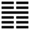

Lôi Địa Dự (豫 yù)
Thoán từ: :
豫: 利建侯, 行師．
Dự: Lợi kiến hầu, hành sư.
Dịch: vui vẻ: Dựng tước hầu (để trị dân), ra quân thì tốt.
Giảng: Có ba cách giảng ý nghĩa quẻ này.
- Chấn ở trên, Khôn ở dưới, có nghĩa là ở trên thì động, hành động; ở dưới thuận theo, như vậy tất vui vẻ.
- Sấm ở trên đất, nghĩa là khí dương phát động (chấn thuộc dương) mà muôn vật ở trên phát sinh, cũng là cảnh tượng vui vẻ.
- Quẻ này chỉ có một hào dương (hào 4), 5 hào âm đều theo nó, nó làm chủ trong quẻ, như một người tài đức, làm việc gì cũng thuận cả, tất thành công, sẽ vui vẻ, an ổn.
- Thuận với lẽ tự nhiên thì dù trời đất cũng nghe theo, huống hồ là việc dựng tước hầu, ra quân, dân há lại không theo.
- Thoán truyện bàn rộng thêm: Cái đạo thuận lẽ mà hành động đó là đạo trời, cho nên mặt trời mặt trăng thay nhau chiếu sáng ban ngày ban đêm, không bao giờ lầm; bốn mùa thay nhau chẳng bao giờ sai. Thánh nhân thuận lẽ mà hành động thì hình phạt không phiền phức mà dân chúng phục tòng.
Ý nghĩa các hào:
1.
初六: 鳴豫, 凶．
Sơ lục: Minh dự, hung.
Dịch: Hào 1, âm: Khoe mình vui sướng một cách ồn ào, xấu.
Giảng: Chữ Dự, tên quẻ có nghĩa là trên dưới thuận nhu hành động mà cùng vui vẻ; còn chữ dự trong các hào thì có nghĩa là cá nhân vui vẻ.
Như hào âm nhu ở dưới cùng này, bất trung, bất chính, là một tiểu nhân, ỷ có hào 4 cương kiện và có địa vị ở trên ứng viện, lấy làm đắc ý, bộc lộ nỗi sung sướng của mình một cách ồn ào, thế là kiêu mạn, xấu.
2.
六二: 介于石, 不終日, 貞吉．
Lục nhị: giới vu thạch, bất chung nhật, trinh cát.
Dịch: Hào 2, âm: Chí vững như đá, chẳng đợi hết ngày (mà ứng phó ngay), chính đính, bền, tốt.
Khổng tử, theo Hệ từ hạ truyện, Chương V, cho rằng người quân tử biết trước được triệu chứng từ khi mới có dấu hiệu, cho nên ứng phó mau, giao tiếp với kẻ trên thì không nịnh, với kẻ dưới thì không nhờn, biết lúc nào nên nhu, lúc nào nên cương.
3.
六三: 盱豫, 悔遲, 有悔．
Lục tam: Hu dự, hối trì, hữu hối.
Dịch: Hào 3, âm: Ngửa mặt lên trên (mong được phú quí) mà vui mừng, như vậy thế nào cũng ăn năn, mà sửa đổi chậm, lại càng ăn năn hơn.
Giảng: Hào này cũng bất trung, bất chính, như kẻ tiểu nhân ngó lên trên là hào 4 dương cương, mong được phú quí mà vui mừng; không sớm rút chân ra khỏi cái bẩy quyền thế thì sẽ ân hận lớn.
4.
九四: 由豫, 大有得; 勿疑, 朋盍簪．
Cửu tứ: Do dự, đại hữu đắc; vật nghi, bằng hạp trâm.
Dịch: Hào 4, dương : người khác nhờ mình mà vui, mình có thể thành công lớn được; cứ hết lòng chí thành, đừng nghi ngờ thì các bạn thanh khí sẽ lại giúp mình đông mà chóng.
Giảng: Hào này làm chủ trong quẻ, có tài, có địa vị cao, lại được hào 5 (vua) hết lòng tin, nên tạo hạnh phúc được cho người, thành công lớn được.
Nhưng là hào dương độc nhất trong quẻ một mình đảm đương gánh nặng, có lúc chán nản, nghi ngờ, nên Hào từ khuyên cứ chí thành, thì sẽ có nhiều bạn tới giúp.
5.
六五: 貞疾, 恆, 不死.
Lục ngũ: Trinh tật, hằng, bất tử.
Dịch: hào 5, âm : Bệnh hoài, dai dẳng nhưng không chết.
Giảng: Hào 5, ở địa vị chí tôn, nhưng âm nhu, và có hào 4 được lòng dân, gánh hết việc thiên hạ, chuyên quyền; 5 chẳng phải làm gì cả, chỉ chìm đắm trong cảnh hoan lạc (vì ở thời Dự), nên ví với một người bị bệnh hoài. Nhưng may là có 5 đắc trung mà 4 cũng không áp bức, nên vẫn giữ được hư vị, cũng như bị bệnh dai dẳng mà không chết.
Phan Bội Châu cho hào 5 này đúng là trường hợp các vua Lê nhu nhược bị chúa Trịnh chuyên quyền, nhưng vẫn giữ được hư vị.
6.
上六: 冥豫,成有渝, 无咎．
Thượng lục: Minh dự, thành hữu du, vô cữu.
Dịch: Hào trên cùng, âm: mê tối vì hoan lạc, nhưng nếu biết sửa đổi nết xấu thì không lỗi.
Giảng: hào này âm nhu, bất trung bất chính, lại ở thời cuối quẻ Dự, cho nên ví với người mê tối vì hoan lạc. Nhưng cũng may, hào này ở trong ngoại quái Chấn, Chấn có nghĩa là động, có hy vọng nhúc nhích tự cường được, như vậy sẽ không xấu.
*
Chúng ta nhận thấy tên quẻ là Vui, mà sáu hào chỉ có hai hào (2 và 4) là tốt, còn 4 hào kia xấu nhiều hay ít cả, xấu nhất là hào 1 vì kiêu mạn, khoe khoang ồn ào cái vui bất chính của mình; mà tốt nhất là hào 2, vì không ham vui mà giữ vững chí mình.